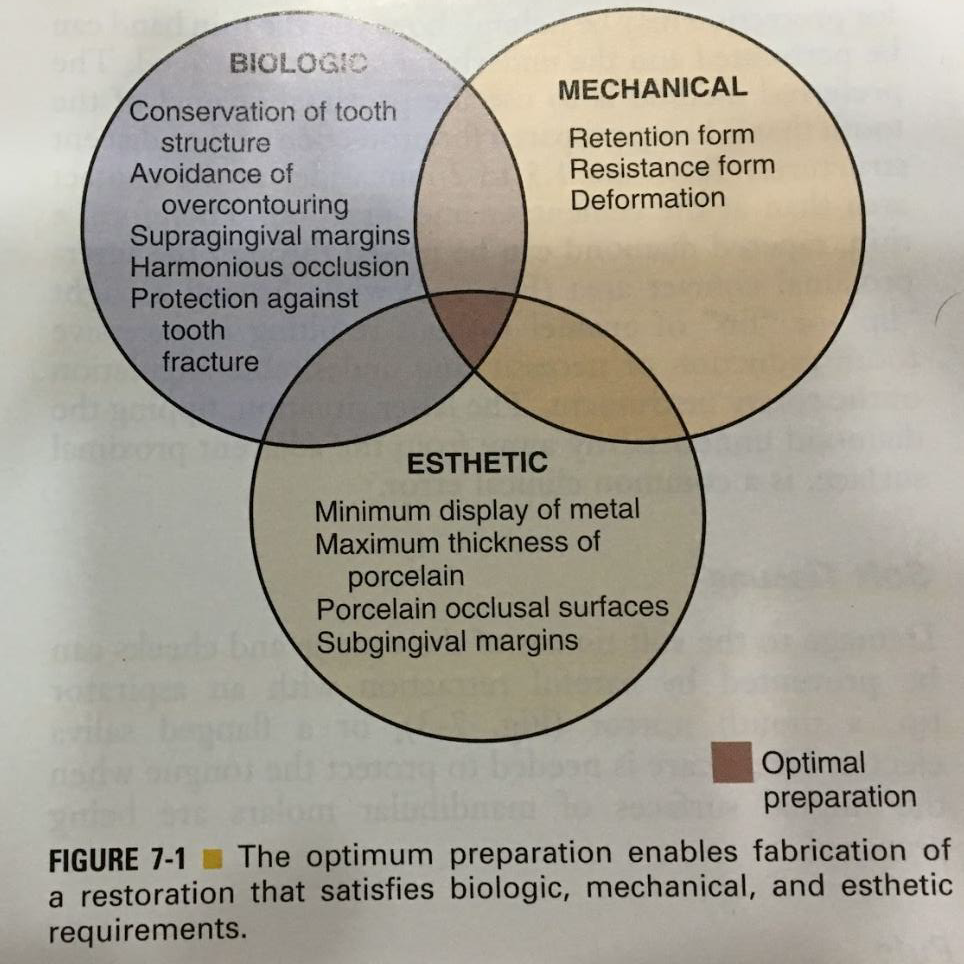
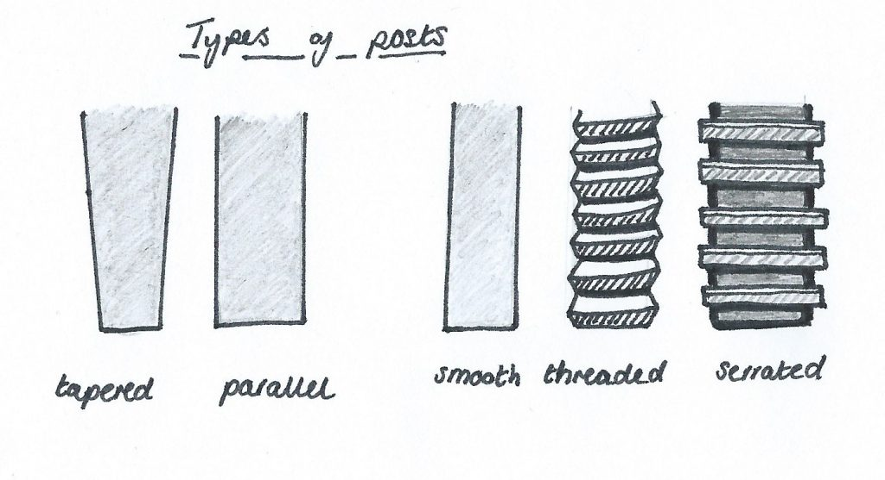
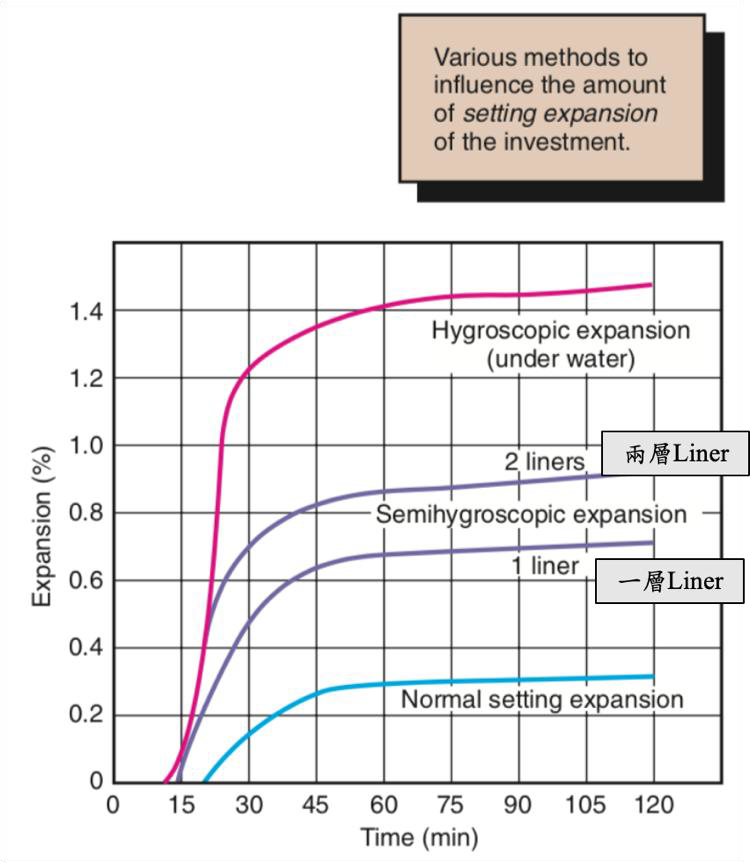
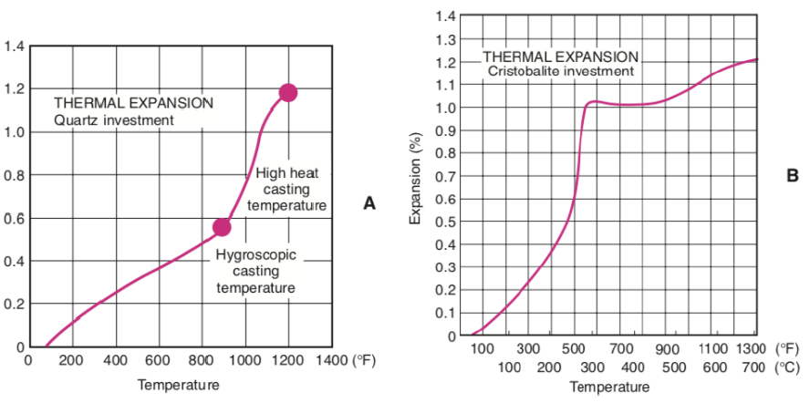
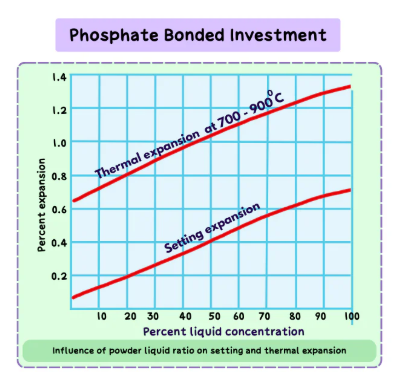

FPD
名詞
- Luting agent
- 黏著劑
Marginal design


A. Feather edge
C. Chamfer
D. Beveled
E. Shoulder (與牙齒夾角約90度)(容易有undercut)
F. Sloped shoulder (與牙齒夾角約120度或135度)
G. Beveled shoulder (與牙齒夾角約90度，但在邊緣會做成斜面)
- Feather edge(少用)
- 做陶瓷貼片(Porcelain Laminated Veneer)
- Chisel edge
- Chamfer margin
- 鑄造金屬牙冠(cast metal crown)
- 現在全瓷冠也可以用
- chamfer margin < 0.5mm (半支 Bur)，否則產生 unsupported lip of enamel
- Beveled margin
- Cast
- 藏在 Subgingival
- Shoulder
- 要和表面垂直
- PFM 的 Buccal
- Sloped shoulder (與牙齒夾角約120度或135度)
- Beveled shoulder
- Shoulder 外面再 Beveled
- metal collar 的 PFM 的 Buccal

通常 Crown 會略大，Beveled 比較不密

金屬空隙能到 10 μm
Resistant
- 咬合力約 4340N
- 適宜的taper為5~22°
- 大臼齒的cusp height至少要有3.5~4 mm
- h/w > 0.4
- ZPC 24h 抗壓 70MPa
grooves
- 幾乎不增加 retention
- 高度: 3–4 mm
- 深度: occlusal< cervical
Complete cast

-
Chamfer: ≥ 0.5mm
-
Occlusal: 1.5mm
-
retention: 6°
-
resistance: 5-2°
-
Mx. molar
- Buccal Cusp (Nonfunctional)
- 1-1.5mm (1/2)
- occlusoaxial line angle: Bevel, 厚度 ≥ 0.6mm
- 太薄cast 做不出來，會 overcontour
- Lingual cusp (functional)
- 1.5-2mm
- Occlusal third bevel: 要足夠厚度
- Buccal Cusp (Nonfunctional)
-
Md molar
- Buccal Cusp (functional)
- 1.5mm
- Lingual cusp (nonfunctional)
- 1mm (幾乎不用特別修)
- Buccal Cusp (functional)
PFM
- 燒瓷前後都能修金屬
- PFM支架燒瓷溫度約960°C，傳統 complete cast crown 金屬會融化
- 熱膨脹低
- 磨很多（complete cast crown只咬 1mm
- Subgingival → 牙周問題
- 陶瓷至少要1.2mm，金屬至少0.3mm


Preparation
- Depth grooves
- 厚度: 1.2+0.3mm
- Cervical plane
- 牙齒長軸(同時也是置入途徑)
- Incisal plane
- Facial contour
- C/I
- 前:1/2
- 後:1/1
-
Occlusal/ cusp
- Metal: 1-1.5mm
- 陶瓷: 2mm
- 前牙 Incisor 為了美觀
- 後牙為了強度
-
牙齦下金屬環(subgingival metal collar)
- 0.5mm subgingival
- shoulder margin: 寬1mm，超過 Contact point 才能藏金屬
-
Margin
- Shoulder(90°): 支撐 ceramic
- Shoulder(90°)+Bevel: metal collar, Marginal gap ↓
- Shoulder(120°): Free enamel↓, Marginal gap ↓
Ceramic
-
分成 Mill, Press
-
不要 Bevel， 邊緣太薄車機做不出來
-
最小厚度
- Particle filled glass: 1mm
- Zirconia: 0.5mm
-
都要 Rounding
-
材料
- particle filled glasses
- polycrystalline ceramics
- ceramic-polymer compound material
| 類別 | 組成與代表材料 | Flexural strength (MPAa) | 特色 |
|---|---|---|---|
| Particle-filled glasses |
|
~120–500 |
|
| Polycrystalline ceramics （多晶陶瓷） |
|
~700–1200+ （Zirconia） |
|
| Ceramic-polymer compound material （陶瓷–樹脂混合材料） |
|
~150–200 |
|
類陶瓷但帶彈性，較不脆 | 、 友善 | | **** |
anterior crown monolithic
Particle filled glass(第一類材料)
- Margin: 1mm
- Incisal：1.5-2.0 mm
- Labial, Palatal: 1.0-1.5mm
posterior crown monolithic
- Margin：1.0 mm
- Occlusal：1.5-2.0 mm
- Cusp: 2mm
- Labial, Palatal: 1.0-1.5 mm。
- Converge 4-6°
Inlay
- Thickness: 1.5-2 mm
- intercuspal width: < 2.5mm (1/3)
- Axial wall: 10°
- TOC(總咬合收斂)：6°
Post and Core
-
不一定要 Post 但 Core 要有
-
Endodontically treated teeth (ETT) more brittle or fragile?
- 含水量跟 vital 差不多
- Margin 破壞 → flexibility ↓
- 無法控制咬力
-
ETT較易斷裂而無法保留，尤其在大臼齒區域、較少鄰接牙or無鄰牙處、較長或受力複雜之牙橋
-
Cusp coverage 可明顯提高牙齒存活
- 後牙 crown 沒/有：50/87 months
- 前牙：幾乎沒差
-
Peri-cervical Dentin (PCD) Thickness: CEJ上下各約4mm的dentin厚度，評估 ETT 結構
Design
後牙
- Complete-coverage crown + Core
- 不一定要 Post
- Full metal → Zirconia
- 齒質結構好可考慮 onlay
前牙
- 齒質多：Resin
- 齒質少、美觀考量：Post & Core + Crown(Veneer)
- 下顎前牙predentin wall 較薄 → fiber post
Post
- 目的
- 提供 Core Retention
- 將力量轉移至牙根 (前牙)
- Post本身不會加強牙根的 strength，除非寬canal、管壁薄
- 放在最直，最沒有Concavity的牙根
- Mx premolar: P(support好)
- Mx molar: P
- Md molar: D
- 在 4 canal 不好用，但仍比 M 好，因為有danger-zone易造成 perforation
- C shaped 會 direct filling (填 Resin )
- molar 處，Post不要超過 Orifice 下 7mm
Two step v.s. One step
- Post, Core 是否分開做
- One-step 通常是 Cast
- Post, Core 的 Axis 有差異時只能 One step 否則Core 的 Retention 不足
- Ex. Attrition 導致 Vd 喪失
| 項目 | One-step technique | Two-step technique |
|---|---|---|
| 操作時間 | 快 | 較慢 |
| Post 黏著 | 易受操作影響 | 穩定、可靠 |
| 氣泡產生 | 易發生 | 可控制 |
| 建議應用 | 短 post 或暫時性修復 | 永久 fiber post 修復 |
Materials
- 過硬(base metal) → Root fracture
- 過軟 (Gold) →
- Post 脫落
- Flexibility → Crown marginal leakage
- tooth structure夠用較軟 Post ，反之選 Rigid
- 後牙一般用軟 Post
Prefabricated: 預製成固定尺寸與形狀
| 材質種類 | 性質 | |
|---|---|---|
| Metal | Cast (precious) | noble alloy, Fit |
| SS/ Ti |
|
|
| Woven fiber |
|
|
| 單向纖維 | Carbon fiber |
|
| Glass/ Quartz fiber |
|
|
| Polyethylene fiber (Ribbond) |
|
|
| Ceramic (Zirconia) |
|
|
黏著劑(Luting cement)
| Cement 類型 | 特性 / 注意事項 | |
|---|---|---|
| Polycarboxylate cement (PCC) |
|
|
| Zinc Phosphate Cements (ZPC) |
|
|
| GI |
|
|
| RMGI | 早期版本會膨脹，現代已多改善，但仍需注意膨脹與黏著力問題 | |
| Resin cement |
|
|
| Screw post |
|
|
Design
- 寬度：無法確定直徑與Retention 有關，太寬還可能造成牙齒脆弱?
- 長度：影響受力、固位性
- 太短 → root wall, Cervical 應力
- 太長 → 影響Apical hermetic seal
- 建議到牙根的Middle-third
- 表面設計：粗糙
- 形狀

| Post形狀 | 特色 |
|---|---|
| Tapered |
|
| Parallel |
|
| Post 表面處理 | 特色 |
|---|---|
| Smooth |
|
| Threaded |
|
| Serrated |
|
- Custom cast post v.s. Prefabricated post
| 項目 | Custom Cast Post | Prefabricated Post |
|---|---|---|
| 特質 | 1. 可針對各種形態的根管密合 2. Custom cast core 可以避免 coronal dentin 大量損失 |
1. 無法和所有 canal 密合 2. 較省時，可一次完成 3. 相對較便宜 |
| 密合度 | 高 | 一般 |
| 保留齒質 | 高 | 中等 (要配合 Cast) |
| Retention | cement | 平行 + 粗糙，較好 |
| 省時性 | 較慢 | 快 |
| 適用情況 | 齒質少 | 齒質多 |
Core
| Type / Material | 性質 / 優缺點 |
|---|---|
| Amalgam core |
|
| Composite |
|
| Glass ionomer |
|
| Dental cast gold | 太軟，需要至少 Type IV |
| Non-precious cast metal | 高強度、成本低，美觀差，精密鑄造 |
Prepare
一定要有 ferrule (圍箍)
- Apical GP>3mm (最好 5mm)
- Minimal canal preparation
- Adequate post length
- retention
- canal的1/2~2/3, middle root:若放在cervical反而會造成力量集中，fracture
- 要到 alveolar bone 下
- Definite vertical stop (for casting)
- 避免 Try in 產生 wedge effect
- Anti-rotation effect: 別讓 Post 旋轉
- ferrule
- sound tooth structure 至少高 1.5-2mm，厚 0.5~1mm
牙齒結構不足，沒有Ferrule effect
- Crown lengthen
- Orthodontic Forced Eruption
- 順便改善歪斜
Failures
- Custom cast post-core(CPC) > ParaPost(PP) with amalgam core
- 製作很大的casting post-core(15%)比parapost(8%)失敗率更高，但會去做casting post- core 的患者，本身的齒質就比較脆弱了，因此就不太清楚到底是因還是果，只是統計學上的結論。
- 男>女
- 咬力
- 年紀大>小
- 牙齒較無彈性，尤其是大於60 歲的患者
- 上顎>下顎
- 尤其是 lateral incisor, canine, premolar，比較多側向力，相對下顎都是垂直力
- 複雜的 FPD>Single crown
impression
-
排齦線(Retraction Cord)
- 浸泡止血劑 (Astringent): 酸性環境下才有效 → 溶 Smear layer → 術後敏感
- dentinal tubule sealing 降低術後敏感
- Double cord Technique
- 第一條細線放得深：放入牙齦溝底部，在印模時防止牙齦溝出血。
- 第二條粗線放得寬：放在margin的高度，用以排開牙齦，放好後要是肉眼可以稍微看到線的，否則牙齦仍然會是封起來的。
- 等待適當時間後，取出第二條粗線，就可以印模了。
-
排齦膏(Displacement paste)
- 含有 AlCl3
Die
- Gypsum
- IV, V
- 便宜
- Resin
- 不相容 polysulfide, Hydrocolloids 印模材，主要用 polyether
- 電鍍單齒模
- 先在印模內壁上電度一層極薄且均勻的金屬膜（銅/ 銀），再灌石膏或樹脂
- 強度高
- 印模
-
Addition Silicone(PVS): 不相容，親油性，導電塗層不易均勻附著
-
Condensation silicone：不相容，醇類、有機副產物影響導電漆附著。
-
Polysulfide：鍍銀
-
hydrocolloid：不相容，立即灌模
-
Polyether：容易吸水、變形
-
Impression compound：鍍銅
-
單齒模的分類
-
直接分開的單齒
- 印兩個，把一個切成 Die
- 製造簡單，但難用
-
可拆式
- 石膏分兩層灌模，要做 Die 的兩層間分離劑
- 用 Pin 分類
Dowel pin system
- Pin 有彎有直
- Pin 要平行，die 無 undercuts
- 可以 Pre-pour (Pin 和第一層石膏一起) 和Post-pour (低一層石膏打洞，黏 Pin，常用)

Di-lok tray system
- Base 有齒輪狀 Groove 用以定位
- 先灌完模，再用特殊 Base 加厚，最後鉅下 Die
Pindex system(罕見)
- 類似 Post-pour，但是雷射定位，機器鑽孔
Wax & Cast
在 die 上堆蠟
-
Die Spacer: 提供黏著劑空間
- 厚度 20–40μm
- Margin 1mm 不塗，保留為密合區
-
Marking the Margins
- 不能用鉛筆：刮傷模型、顏色過深、抗焊性(anti-flux)
-
Wax 性質
- 高熱膨脹：分層堆蠟
- 殘餘應力：包埋前 remelt修邊
- 揮發性：重複加熱會裂開
-
Wax types
| 類型 | 硬度 | 使用方式 | 特性 |
|---|---|---|---|
| Type I | 中硬 | 口內直接法 | 在口溫下不應流動 |
| Type II | 軟 | 模型間接法 | 室溫下仍應穩定不變形 |
- 編號工具
- Wax addition instruments(No. 1 & 2, B)
- Burnisher(No. 3, C)：可微熱使用，用於光滑與緊密化表面。
- Wax carvers(No. 4 & 5, DE&F)：保持銳利，不加熱。
- spatula (No. 7 / 7A, GH)：大量堆蠟，建立初始coping最實用。
-
鑄道
- Wax: 常用
- Plastic: 沸點比 Wax 高
- 強度高、變形量小
- 會堵塞，導致 Wax 殘留 → Metal 表面粗糙
- Plastic 中空設計，避免堵塞
- Metal
- 高熔點
- 中空設計
-
一般來說，鑄道的直徑大較好：熔融金屬更易流通
-
Attachment (鑄道的連接點)
- 過窄：流速不足
- 孔洞(Porosity)
- 表面粗糙：熔液流動不穩、氣體無法順利排出。
- 過寬：熔液衝擊模壁
- 湯口痕 (Sprue mark) / 流線痕 (Turbulence mark): 衝擊模壁，導致Attachment周遭表面不平整。
- 收縮孔洞 (Shrinkage porosity)：熔液太快充滿模穴、主體先凝固 → 連接點仍液態 → 產生回縮時金屬不足。
- 過寬處冷卻速度不均，導致內部應力集中，易產生微裂。
- 過窄：流速不足
包埋
-
Setting Expansion
-
包埋材的組成
- 耐火材料(Refractory Material)：常為矽土(silica)
- 結合劑(Binder Material)：提供強度，用以分類
- 添加劑(Additives)
Gypsum-bonded Investment
- 650°C> 石膏不穩定
- Setting 放熱 → 混合時間長會縮短 Working Time
- 耐火材：方石英/白矽土(Cristobalite)、石英(Quartz)
- Type II, III, and IV 金合金。
- 膨脹
- 硬化性膨脹(Setting Expansion)
- 吸濕性膨脹(Hygroscopic Expansion)
 - 熱膨脹(Thermal Expansion)’
- Cristobalite, Quartz 受熱由 α 轉 β 相 → 水粉比高，膨脹少

- Cristobalite, Quartz 受熱由 α 轉 β 相 → 水粉比高，膨脹少
Phosphate-bonded investment
- 高濃度的Silica
- Blinder: MgO, NH4PO4
- Working Time 短
- Setting 放熱 → 混合時間長會縮短 Working Time
- Setting Expansion 可控，粉多膨脹高

- Colloidal Silica in Water 膠體二氧化矽懸浮液
- 取代水
- 延長 Working time
- 增加 Setting expansion : 膠體矽氧網絡在凝結時會形成更多交聯結構，使結構間的排斥力增大。
- 增加 Thermal expansion : refractory 更強，能加熱到更高溫
- 增加表面平滑
- 孔隙小，空氣難完全離去
鑄造
- PFM 合金需要 Gas-Oxygen Torch